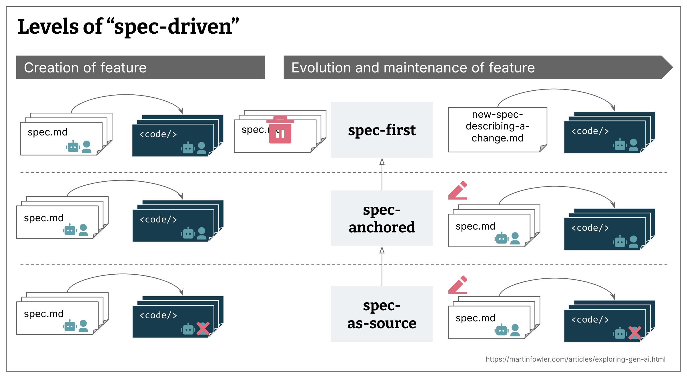
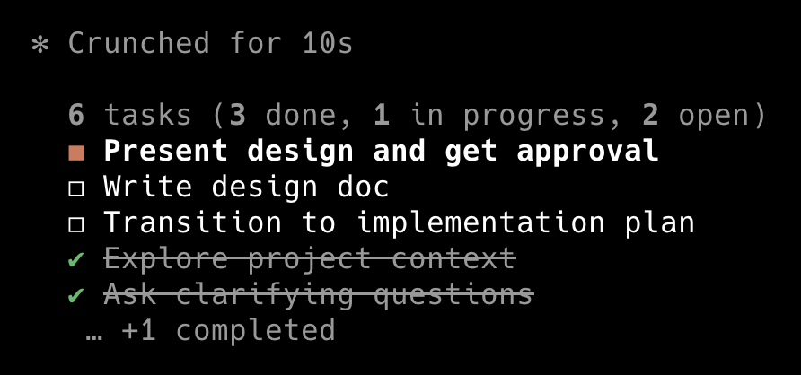

Day 3
- Intro to LangChain
- Token Optimization
- Engineering Docs: RFC, ADR, PRD
- Spec-Driven Development
- Spec Kit vs Superpowers vs Grill-me
Intro to LangChain
Token
Optimization
What's eating
your budget
- Verbose terminal output
- Full file reads when only symbols are needed
- MCP data dumps without filtering
- Oversized
CLAUDE.md
Most waste is
invisible
to the user.
Key idea: cutting token waste is the highest-leverage cost optimization available today.
Tools and
reductions
| Tool | Reduction | Best for | Link |
|---|---|---|---|
| RTK (Rust Token Killer) | 60–90% | Terminal output filtering | github.com/rtk-ai/rtk |
| Caveman Claude | 75% | Simplified output language | github.com/juliusbrussee/caveman |
| Graphify | 70% | Codebase summary / graph exploration | graphify.net |
Engineering
Docs
Request for
Comments
A structured proposal that invites feedback before a decision is made. RFC = think out loud · ADR = lock it in.
- Used by TC39, Rust, React — the pattern is universal
- Opens the decision to the team before the cost of change goes up
- AI can draft an RFC from a rough idea in seconds
Lifecycle
RFC
Propose · Discuss · Refine
ADR
Record the decision
PRD
Define requirements
Architecture
Decision Record
Captures a significant technical decision: what was chosen, why, and what trade-offs were accepted.
- Write one for any irreversible or hard-to-reverse choice
- Keeps the team aligned on why, not just what
- AI can generate drafts — you supply the context
ADR Structure
Status — proposed · accepted · deprecated
Context — why this decision was needed
Decision — what was chosen and why
Consequences — trade-offs and follow-ups
Product
Requirements
Document
Defines what you're building, for whom, and why — before a line of code is written.
- Written before implementation begins
- Shared language between devs, design, and product
- AI excels at drafting PRDs from a rough brief
PRD Structure
Problem — what pain are we solving
Goals — measurable outcomes
Non-Goals — explicit scope limits
Requirements — must-haves and nice-to-haves
Metrics — how we'll know it worked
Spec-Driven
Development
Code is not
the place to
define
requirements.
Problems are discovered after the code has already made the decisions.
Like a well-executed
Epic
Spec first
- Spec-first: write a well-structured spec before coding — it's used for the task and then discarded
- Spec-anchored: spec stays after the task is done, kept for evolution and maintenance of the feature
- Spec-as-source: human only edits the spec — code is generated and never touched by the developer
- All three are spec-first, but not all strive to be spec-anchored or spec-as-source
Key idea: specs become the executable artifact — not scaffolding that gets discarded.

Source: Birgitta Böckeler, martinfowler.com
Install Spec Kit
Pick your version from the releases page and install the Specify CLI:
uv tool install specify-cli --from git+https://github.com/github/spec-kit.git@vX.Y.ZThen scaffold your project:
specify init .
specify init [project-name] # creates a new folderWhat init creates
Project scaffold (once)
.specify/— workflow engine.claude/skills/— speckit commandsCLAUDE.md— AI context pointer
Per feature (on demand)
specs/001-feature/spec.mdspecs/001-feature/plan.mdspecs/001-feature/tasks.md
.specify/
The workflow engine — committed to version control
.specify/
├── memory/
│ └── constitution.md ← AI reads this every session
├── templates/
│ ├── spec-template.md ← used by /speckit-specify
│ ├── plan-template.md ← used by /speckit-plan
│ └── tasks-template.md ← used by /speckit-tasks
└── extensions.yml ← git hooks (auto-branch, auto-commit).claude/skills/
Speckit commands wired as Claude Code skills
.claude/skills/
├── speckit-constitution/ ← define project principles
├── speckit-specify/ ← turn a description into a spec
├── speckit-clarify/ ← fill spec gaps with questions
├── speckit-plan/ ← generate implementation plan
├── speckit-tasks/ ← break plan into ordered tasks
├── speckit-implement/ ← execute tasks one by one
├── speckit-checklist/ ← generate QA checklist
└── speckit-analyze/ ← cross-artifact consistency checkEach folder is a SKILL.md — one per workflow phase
specs/
Created on demand — one folder per feature, one folder per branch
specs/
└── 001-shopping-cart/
├── spec.md ← /speckit-specify (user stories, requirements)
├── plan.md ← /speckit-plan (tech decisions, file structure)
└── tasks.md ← /speckit-tasks (ordered, dependency-aware)Each folder maps 1:1 to a git feature branch — created automatically by the git extension hook
The flow
in 5 phases
(Short version)
Constitution
Define the non-negotiable principles of the project (Constraints / Technical harness)
- Testing standards
- Stack constraints
- Naming and architecture conventions
/speckit.constitution Quality, testing, and UX consistency principlesSpecify
Describe the what and the why — no technical decisions (Business requirements)
/speckit.specify Build an app to organize photos in albums,
grouped by date, with drag-and-drop reordering.
Albums are never nested inside other albums.Rule: no stack, libraries, or architecture in this step.
Plan
The framework works in architecture decisions, stack, and technical design
/speckit.plan Vite, vanilla HTML/CSS/JS.
Images stay local. Metadata in SQLite.
Optional before: /speckit.clarify to
detect underspecified areas.
Tasks
Ordered task list with clear dependencies
/speckit.tasks
Optional after: /speckit.analyze to
validate consistency across artifacts.
Implement
Execute all tasks using all artifacts as context
/speckit.implementThe recipe
step by step
| Step | What it does |
|---|---|
| CONSTITUTION | Permanent rules — always in scope |
| SPECIFY | What the week must deliver |
| CLARIFY | Which requirements are still ambiguous |
| PLAN | How the material will be built |
| CHECKLIST | What to check before splitting work |
| TASKS | What concrete files and changes to make |
| ANALYZE | Whether everything fits before starting |
| IMPLEMENT | Actually build the material and the code |
| CONVERGE | Check what's missing after implementation |
Spec Kit = 9 steps · optional: CLARIFY, CHECKLIST, ANALYZE
Spec Kit
vs
Superpowers
vs
Grill-me
From Grill to Review
Small change fits one context window? Skip 2 & 3 —
grill-with-docs → implement →
code-review.
Work exceeds the smart zone (~140k tokens)? Compress to a spec, split into tickets, run each ticket in its own clean context, then review the whole against the spec.
implement runs a per-ticket review internally.
code-review is the final pass across the whole
change — spec compliance + coding standards, in fresh sub-agents so
the author isn't grading their own homework.
Workflow
enforced
by design
- Plugin-based — installs into Claude Code
- 14 auto-activating skills per context
- Process discipline: design → plan → TDD → review
- Works inside the agent loop
Install in: Claude Code · OpenCode · Cursor · Gemini CLI · Copilot CLI · Codex · Kimi · Pi · Antigravity · Factory Droid

Same goal,
different
philosophy
Spec Kit
- CLI-based — scaffolds files and slash commands
- 5-phase workflow: Constitution → Specify → Plan → Tasks → Implement
- Agent-agnostic — works with Copilot, Cursor, Gemini, Codex, OpenCode, Kimi, Pi…
- 3 levels: spec-first (doc before code), spec-anchored (spec lives on), spec-as-source (human edits spec, never code)
- Birgitta Böckeler — martinfowler.com
Superpowers
- Plugin-based — installs into Claude Code
- 14 auto-activating skills per context
- Process discipline: design → plan → TDD → review
Grill-me
- Dialogue-first — aligns before any planning
- Reaches a shared design concept via questions
- Code stays in focus throughout (anti-spec-to-code)
Day shift
Night shift
Day shift — Human
- Grill Me session
- PRD review
- Kanban board review
- QA and code review
Planning is always human in the loop. Taste, alignment, and quality belong to you.
Night shift — AI
- Pick next unblocked issue
- Write failing test (TDD red)
- Implement to pass (green)
- Run feedback loops, commit, repeat
Implementation is AFK. Agent loops until the backlog is empty or blocked.
Pick the
right tool
Spec Kit
- Team uses multiple AI tools
- Need version-controlled, shareable specs
- Artifacts that survive beyond the session
Superpowers
- You live in Claude Code
- You want automatic workflow enforcement
- TDD and review built into every task
Grill-me
- Misalignment is the real risk
- Feature is complex or requirements are fuzzy
- You want to own and understand the planning stack
They are not mutually exclusive — Spec Kit for requirements, Superpowers for execution, Grill-me for alignment.
Other
frameworks
-
BMAD — Breakthrough Method for Agile
AI-Driven Development
bmadcode/BMAD-METHOD — GitHub -
GSD — Get Shit Done
gsd-build/get-shit-done — GitHub
The ecosystem is exploding. Pick the philosophy that matches how you think.